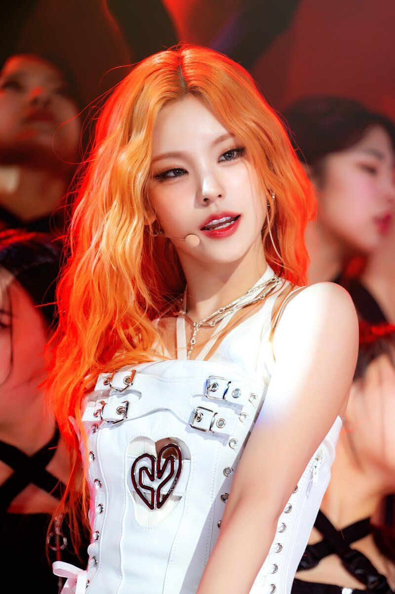
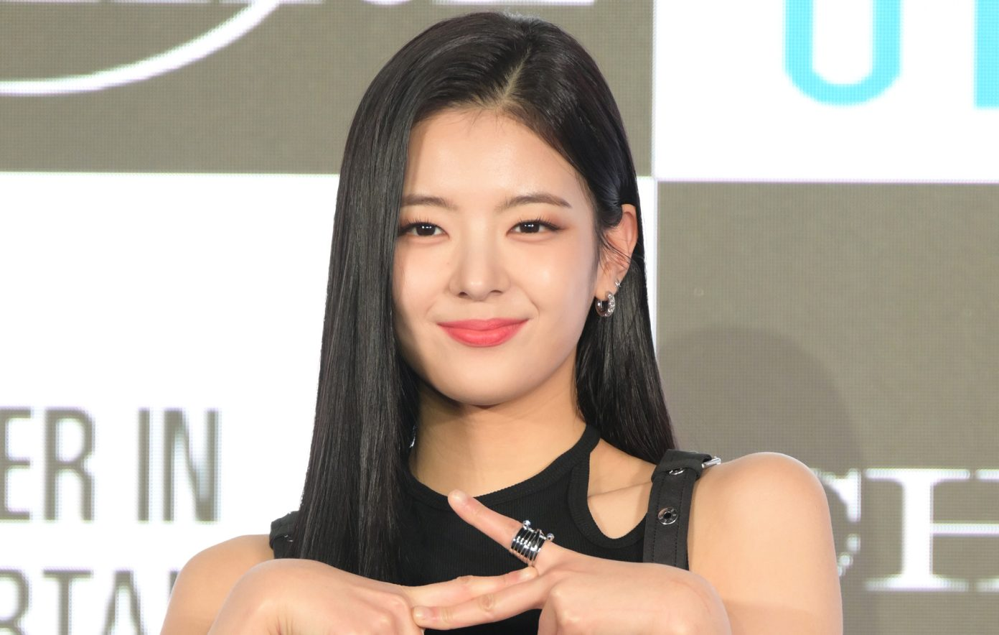
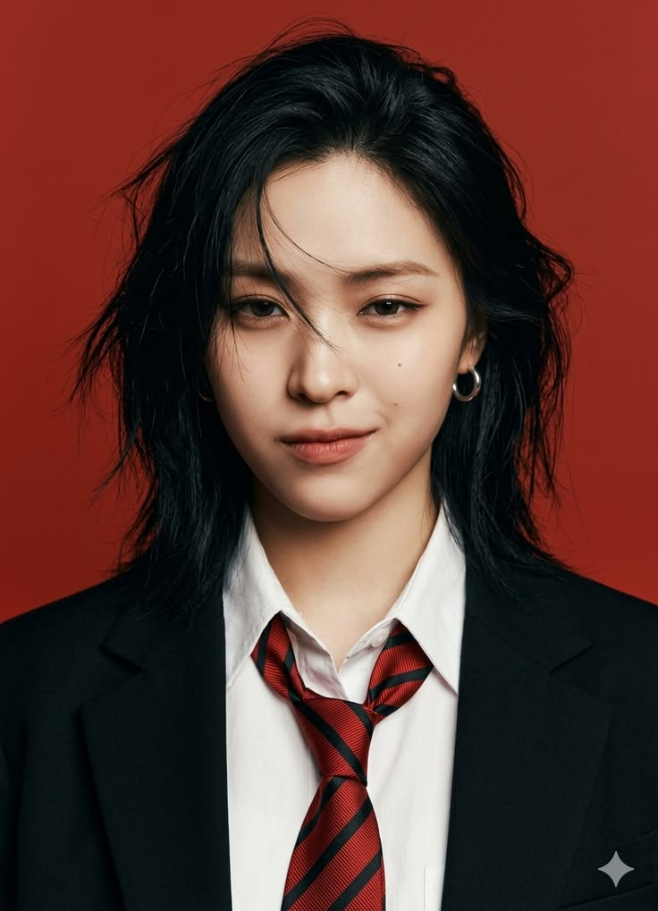
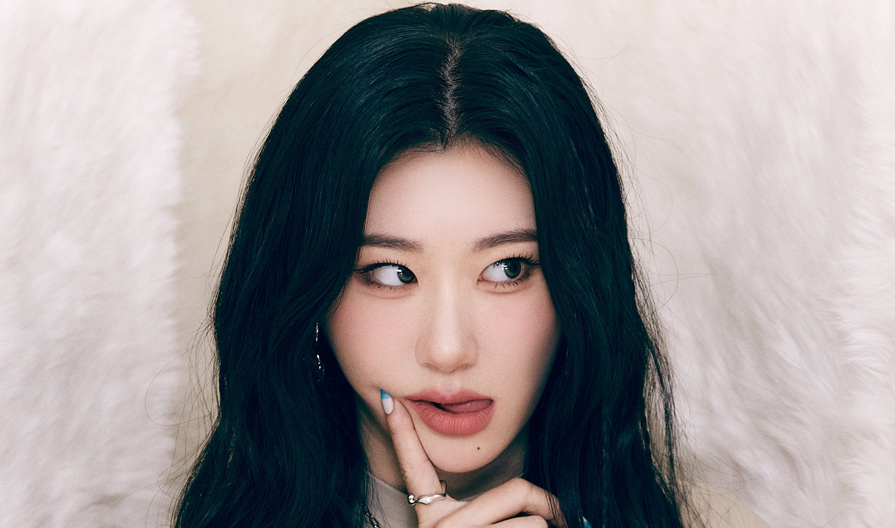
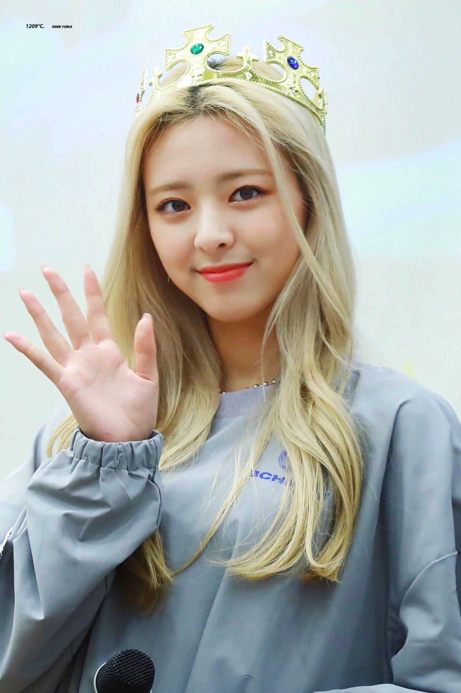

ITZY

| Origine | Séoul, Corée du Sud |
|---|---|
| Agence | JYP Entertainment |
| Débuts | 12 février 2019 |
| 1er titre | Dalla Dalla |
| Membres | Yeji, Lia, Ryujin, Chaeryeong, Yuna |
| Fandom | MIDZY |
| Fleurenoul | OT5 |
ITZY est un girl group de K-pop formé par JYP Entertainment, la même agence que TWICE et GOT7. Elles sont cinq, et Fleurenoul les aime toutes les cinq, sans exception.
C'est qui ?
Le groupe débute en février 2019 avec Dalla Dalla. Gros succès direct : elles gagnent leur premier trophée dans une émission musicale quelques jours seulement après leurs débuts, et raflent la plupart des prix de meilleur nouveau groupe cette année-là.
Côté scène, elles sont connues pour des chorégraphies très puissantes et très carrées.
Les membres

Yeji — leader, née en 2000
La leader et l'une des danseuses principales. Avant ITZY, elle était déjà passée à la télé dans une émission de découverte de talents.

Lia — chanteuse principale, née en 2000
La voix principale du groupe. Elle a passé une partie de son enfance au Canada.

Ryujin — rappeuse et danseuse, née en 2001
Repérée par JYP alors qu'elle allait à un concert de GOT7. Elle avait fini première chez les filles dans l'émission Mixnine avant de débuter avec ITZY.

Chaeryeong — danseuse principale, née en 2001
Elle a participé à SIXTEEN, l'émission qui a formé TWICE, mais n'avait pas été retenue. Sa grande sœur Chaeyeon était dans IZ*ONE, le même groupe que YENA.

Yuna — maknae, née en 2003
La plus jeune du groupe (la « maknae »). Rappeuse, danseuse.
Quelques dates
| 2019 | Débuts avec Dalla Dalla, puis Icy l'été suivant. |
| 2020 | Wannabe et Not Shy. |
| 2021 | Mafia in the Morning, Loco et leur premier vrai album, Crazy in Love. |
| 2022 | Sneakers et leur première tournée mondiale, Checkmate. |
| 2023 | Cake. Lia met ses activités en pause. |
| 2024 | Untouchable et Gold. Les cinq membres renouvellent leur contrat avec JYP. |
Clip
fait par option228 pour fleurenoul